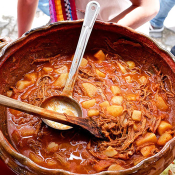

Hilachas
30 de mayo del 2019
Ingredientes:
- 2 Libras de bolovique
- 1 Libra de tomate
- 1 Cebolla
- 6 Miltomates
- 3 Dientes de ajo
- 1 Chile pimineto rojo
- 2 Chiles guaque
- 1/2 Cucharadita de comino
- 3 Papas en torocitos
- 1 Cucharadita de achiote
- 1 Cucharadita de consome de pollo
- 2 Cucharadita de harina
- 1 Cucharadita de aceite
Instrucciones:
Cocer la carne en un litro de agua, sal y cebolla. Cuando la carne esté completamente cocida y muy suave, sácala de la olla y comienza a deshilacharla, ahora en el caldo de la carne se cosen los tomates, cebolla, chile dulce y chile guaque, miltomates y ajos y luego se licua todo y se fríen el la cucharada de aceite y se deja hervir 5 minutos y se le agrega la carne y las papas y dejar cocer hasta que las papas estén semicocidas y entonces se le agrega la harina para espesar y dejar hervir unos 5 minutos mas y listo, se sirve con un rico arroz.

KarlG96: Es la mejor recta que encontre para hacer las hilas, y busque en al rededor de 4 pagina

GRphoto: Es la mejor recta que encontre para hacer las hilas, y busque en al rededor de 4 pagina

Dual_Red: Es la mejor recta que encontre para hacer las hilas, y busque en al rededor de 4 pagina
Dobladas de pollo
17 de abril del 2019
Ingredientes:
- 5 Tazas de masa de maiz
- 5 Tazas de agua Libra de tomate
- 1 Taza de salsa de tomate
- 3 Cucharadas de consome
- 2 Papas cocinadas al vapor
- 4 Pechugas de Pollo Rey cocinadas al vapor
- 1 Cebolla picada finamente
- 1 Cucharada de aceite de oliva
- Sal y pimienta al gusto.
Instrucciones:
- Preparación de la masa: En un recipiente grande amasar la masa de maíz con las 5 tazas de agua, hasta formar una masa homogénea. Agregar a la masa con 2 cucharadas de consomé y la salsa de tomate. Sazonar con sal y pimienta al gusto, mezclar bien.
- Preparación del relleno: En una sartén freír la cebolla, la salsa de tomate, el pollo desmenuzado y la papa machucada, por 10 minutos a fuego medio hasta que se incorporen bien todos los ingredientes. Sazonar con consomé, sal y pimienta al gusto.
- Preparación de las dobladas: Formar una tortilla con la masa , agregar 1 cucharada de el relleno en el centro de la tortilla. Doblar la tortilla para que el rellono que adentro, y sellar la orillla de la doblada con tus dedos. Calentar el aceite en una sarten y freir las dobladas de ambos lados, hasta que estén bien doradas. Colocar las dobladas sobre una servilleta para que adsorba el exceso de aceite. Servir acompañadas con salsa roja, queso y perejil.
KarlG96: Las mejores dobladas de pollo y mas con la salsa que contiene el condimiento especial